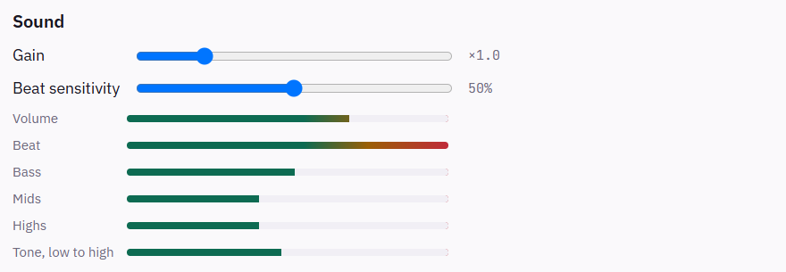

No vendor runtime, no background service, no account. Candeo writes to the device over the HID interface the system already exposes, and the effects you write run inside the application — so they keep running with the window closed.

Devices
Candeo is built for lit devices that speak HID over USB — keyboards, mice, mousepads, headsets. A device declares what it is and where its lights sit, and an effect is written against that, not against a model: an effect written for a mousepad's grid runs on a keyboard, and one written for a keyboard runs on whatever comes next.
Candeo drives a device the way its own software would — the full matrix, its firmware effects, its brightness — from a protocol read off the hardware and checked write by write. See the devices →
Install
Microsoft Store
Signed by Microsoft, and updated by the Store.
Get it from the StoreIt makes no network request of its own: the Store does the updating.
Windows
Installs for your account, no administrator rights.
Download {{version}}Not signed yet: SmartScreen warns about an unknown publisher. More info, then Run anyway.
winget
Once the manifest is accepted.
The full identifier is O2CSI.Candeo.
Every release carries a SHA256SUMS file. On Linux and macOS:
On Windows, against the line for your file in SHA256SUMS:
Twenty-three effects, ready to go
Colour and motion
Radial wave, Diagonal wave, Sweep, Color wheel, Swirl circles, Crossing beams, Breathing, Noise map, Fixed gradient
Weather and night
Rain, Starry night, Lightning, Bubbles
Your typing
Ripples: a ring from every key you press
Time and words
Clock, and Scrolling text for any words, typed or sent by another program
Your other tools
Status row: a key per signal received, green, amber or red
Your music
Equalizer, Waterfall, Beat pulse, Beat ripples, Fireworks, Aurora
Each is tuned while you watch it, and every setting can follow a signal or the music. The effects your keyboard's firmware runs are there too.
An effect is a file you can read
Effects are TypeScript, compiled and run by the application on the Rust side. They receive
the device's layout and the time, and return colours — the effect below runs on any
keyboard, whatever its size. Yours live in
Documents\candeo\effects: ordinary files, editable here or in the editor you
already use.
import { bounds, center, defineEffect, hsv } from '@candeo/effects-api'
export default defineEffect({
description: 'A rainbow sweeping across the keyboard',
render({ layout, time, frame }) {
const area = bounds(layout)
for (const key of layout.keys) {
const across = (center(key).x - area.x) / area.w
frame.set(key, hsv(across * 360 - time * 60, 1, 1))
}
},
})Write your own → — your first effect step by step, what an effect receives, its settings, and recipes: rings, typing, words, sound, signals.

Rules that take over for a while
The time on the hour over your usual effect, the keyboard dark at night: a rule interrupts the effect on a device, then gives it back. It reads as a sentence — every hour, show Clock, for 10 seconds — or as a cron expression when a sentence is not enough. See how rules work →
Your other tools can say what happened
A build that failed, the doorbell, a call starting: a script or Home Assistant sends a
named value to a local API, and your rules decide what it lights — when
build is failed, show a red gradient, while it
holds. Or a setting of the effect already running follows it: a colour, a speed,
straight from the value sent. The sender never names a device or an effect. Off until you
turn it on, and every request carries a token.
See how signals work → — turning them on, PowerShell and Home Assistant, and how to name them.
Lights that dance to your music
Six effects react to what you play — an equalizer, a waterfall of the music going by, flashes, ripples and fireworks on the beat, an aurora swaying at the song's tempo. And any setting of any effect can follow the sound: a speed with the volume, a colour with the bass. Candeo hears what goes to your speakers, never the microphone, and turns it into a few numbers on your computer; the sound is never recorded. See how sound works →

How it is built
- The protocol is documented, with the capture method and the firmware version behind each fact — docs/protocol.
- Decisions are written before the code, and kept when they turn out wrong — docs/design.
- Report construction is tested without hardware: the crate that builds the bytes has no system dependency.
- One engine runs the effects, in a thread that outlives the window, so closing it changes nothing.
What comes next
Each of these is an issue with the thinking already written down, not a wish:
- More devices, contributed — what a protocol contribution has to carry to be reviewable by someone without the hardware.
- Automations on Linux — the nobody at the computer trigger there, then the sound playing.
- winget — installing and updating in one command.
What it sends
Nothing. No account, no telemetry, no identifier. The one request it can make is asking GitHub whether a newer version exists — a setting, off in the Microsoft Store version, where the Store does the updating. The full text is in the privacy policy.